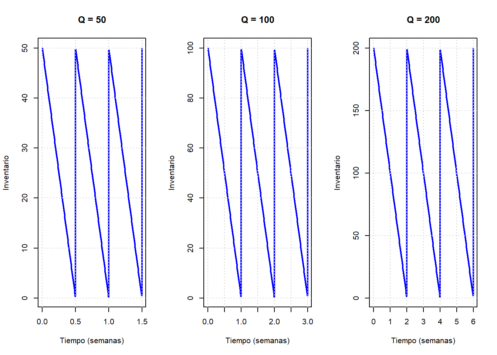

Code
# Variables
d <- 100
C <- 45
S <- 180
i <- 0.005
H <- C * i
# a. Análisis de variaciones
Qs <- c(50, 100, 200, 300, 400, 500, 600)
co <- (d / Qs) * S
cm <- (Qs / 2) * H
ct <- co + cm
resultados <- data.frame(Q = Qs, Costo_Ordenar = co, Costo_Mantener = cm, Costo_Total = ct)
print("Variaciones de costos semanales:")[1] "Variaciones de costos semanales:"Code
print(resultados) Q Costo_Ordenar Costo_Mantener Costo_Total
1 50 360 5.625 365.625
2 100 180 11.250 191.250
3 200 90 22.500 112.500
4 300 60 33.750 93.750
5 400 45 45.000 90.000
6 500 36 56.250 92.250
7 600 30 67.500 97.500Code
# c. Cantidad Óptima
Q_star <- sqrt((2 * d * S) / H)
cat(sprintf("\nLa cantidad óptima es Q* = %.2f toneladas\n", Q_star))
La cantidad óptima es Q* = 400.00 toneladasCode
# b. Representación Gráfica
par(mfrow=c(1,3))
for(Q in c(50, 100, 200)) {
T_ciclo <- Q / d
t <- seq(0, T_ciclo * 3, length.out=300)
ioh <- Q - d * (t %% T_ciclo)
plot(t, ioh, type="l", col="blue", lwd=2,
xlab="Tiempo (semanas)", ylab="Inventario",
main=paste("Q =", Q))
grid()
}
Code
par(mfrow=c(1,1)) # Restaurar diseño